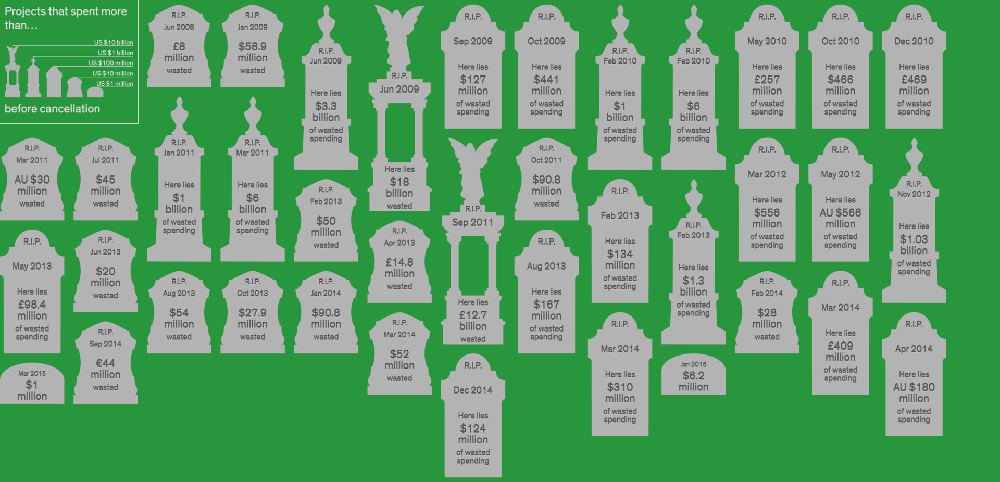

- 00 开篇词 你为什么应该学好软件工程？.md.html
- 01 到底应该怎样理解软件工程？.md.html
- 02 工程思维：把每件事都当作一个项目来推进.md.html
- 03 瀑布模型：像工厂流水线一样把软件开发分层化.md.html
- 04 瀑布模型之外，还有哪些开发模型？.md.html
- 05 敏捷开发到底是想解决什么问题？.md.html
- 06 大厂都在用哪些敏捷方法？（上）.md.html
- 07 大厂都在用哪些敏捷方法？（下）.md.html
- 08 怎样平衡软件质量与时间成本范围的关系？.md.html
- 09 为什么软件工程项目普遍不重视可行性分析？.md.html
- 10 如果你想技术转管理，先来试试管好一个项目.md.html
- 11 项目计划：代码未动，计划先行.md.html
- 12 流程和规范：红绿灯不是约束，而是用来提高效率.md.html
- 13 白天开会，加班写代码的节奏怎么破？.md.html
- 14 项目管理工具：一切管理问题，都应思考能否通过工具解决.md.html
- 15 风险管理：不能盲目乐观，凡事都应该有B计划.md.html
- 16 怎样才能写好项目文档？.md.html
- 17 需求分析到底要分析什么？怎么分析？.md.html
- 18 原型设计：如何用最小的代价完成产品特性？.md.html
- 19 作为程序员，你应该有产品意识.md.html
- 20 如何应对让人头疼的需求变更问题？.md.html
- 21 架构设计：普通程序员也能实现复杂系统？.md.html
- 22 如何为项目做好技术选型？.md.html
- 23 架构师：不想当架构师的程序员不是好程序员.md.html
- 24 技术债务：是继续修修补补凑合着用，还是推翻重来？.md.html
- 25 有哪些方法可以提高开发效率？.md.html
- 26 持续交付：如何做到随时发布新版本到生产环境？.md.html
- 27 软件工程师的核心竞争力是什么？（上）.md.html
- 28 软件工程师的核心竞争力是什么？（下）.md.html
- 29 自动化测试：如何把Bug杀死在摇篮里？.md.html
- 30 用好源代码管理工具，让你的协作更高效.md.html
- 31 软件测试要为产品质量负责吗？.md.html
- 32 软件测试：什么样的公司需要专职测试？.md.html
- 33 测试工具：为什么不应该通过QQ微信邮件报Bug？.md.html
- 34 账号密码泄露成灾，应该怎样预防？.md.html
- 35 版本发布：软件上线只是新的开始.md.html
- 36 DevOps工程师到底要做什么事情？.md.html
- 37 遇到线上故障，你和高手的差距在哪里？.md.html
- 38 日志管理：如何借助工具快速发现和定位产品问题 ？.md.html
- 39 项目总结：做好项目复盘，把经验变成能力.md.html
- 40 最佳实践：小团队如何应用软件工程？.md.html
- 41 为什么程序员的业余项目大多都死了？.md.html
- 42 反面案例：盘点那些失败的软件项目.md.html
- 43 以VS Code为例，看大型开源项目是如何应用软件工程的？.md.html
- 44 微软、谷歌、阿里巴巴等大厂是怎样应用软件工程的？.md.html
- 45 从软件工程的角度看微服务、云计算、人工智能这些新技术.md.html
- 一问一答第1期 30个软件开发常见问题解决策略.md.html
- 一问一答第2期 30个软件开发常见问题解决策略.md.html
- 一问一答第3期 18个软件开发常见问题解决策略.md.html
- 一问一答第4期 14个软件开发常见问题解决策略.md.html
- 一问一答第5期 22个软件开发常见问题解决策略.md.html
- 学习攻略 怎样学好软件工程？.md.html
- 特别放送 从软件工程的角度解读任正非的新年公开信.md.html
- 结束语 万事皆项目，软件工程无处不在.md.html
- 捐赠
42 反面案例：盘点那些失败的软件项目
你好，我是宝玉。我想你日常一定看到过很多项目失败的案例，有些失败项目的案例甚至超出我们的想象，比如说我的朋友圈就被两个项目刷过屏，一个是号称史上最烂的开发项目，开发 12 年，六百万行代码；一个是美国联邦调查局的一个软件项目，花了 1.7 亿美元，最后变成了豆腐渣工程。
也许大多数人看完这类文章后，会当作一个有趣的故事，觉得他们软件工程水平太差了，居然会把项目做成这样。当你学习完软件工程知识后，再看到这些项目失败的案例，不妨从软件工程的角度来分析一下，这些项目失败的真正原因是什么？你能从中获得什么启发？
什么样的软件项目算是失败的项目？
如果我们说一个项目是失败的项目，那么怎么算是一个失败的项目呢？
项目管理协会（PMI）认为成功的项目必须满足六个条件：
- 按时交付。
- 成本在预算范围内。
- 能按照当初的设计正常运行。
- 有人使用。
- 满足项目最初的目标。
- 项目出资方对项目满意。
相应的，如果上面有一个或者多个条件没有满足，那么项目就有可能是失败的，比如说：
- 没能按时交付。
- 成本超出预算。
- Bug 太多，无法按照当初的设计正常运行。
- 产品没有得到市场认可，没有人使用。
- 产品偏移了最初的目标。
- 项目出资方不满意。
而那些特别失败的项目，往往是多个条件甚至所有条件都不能满足，并且时间、成本、交付结果跟最初目标都相差很大，无疑都造成了巨大的损失。
IEEE（电气和电子工程师协会）有一个专门的网页，把过去十年间，那些著名的失败软件项目，做了一个墓碑来展示，墓碑里的这些项目加起来的损失大约 700 亿美元。WikiPedia 上也有一个网页（List of failed and overbudget custom software projects）列出来那些损失严重的软件项目，也是惊人的数字。

（图片来源：Monument to Failure）
而这些软件项目的失败，很大程度上是可以预测和避免的。如果把问题简简单单归结为软件工程水平太差了，或者是项目实施者的水平太差了，那么我们就无法真正的从这些失败中吸取教训，在下一次还会再犯同样的错误。
分析失败软件项目的原因
在航空业，如果一架飞机坠毁，会有专业的调查小组去对飞机失事原因进行详细调查，比如分析说当时的天气情况、飞机的维护记录、飞行员的性格特点，平时受到的培训是怎样的，航空公司的文化，对安全的重视程度等等，从而找到事故的根源，并且提出相应的改进方案，避免类似的灾难再次发生。
软件项目其实也是类似的，对于一个失败的软件项目案例，要去分析：外部环境、技术管理、项目管理和组织文化，这样才能帮助你找到项目失败的根源。
- 外部环境
在调查员去调查飞机失事原因的时候，首先会看的是不是外部环境导致的，例如恶劣的天气环境。分析软件项目失败原因，也可以首先看看外部环境。
如果你去看看历史上那些有名的失败的项目案例，其中政府主导的项目占大多数，而且通常主要因素不是成本，而是各种政治因素导致的不切实际的项目进度，或者是频繁变更的需求，从而严重的影响了成本和质量。
而对于商业软件项目，很多是由于缩减成本导致的。因为商业竞争的大环境，企业为了节约成本，总是希望用更少的人做更多的事情。
还有一些常见的场景就是在一个项目开始之前，销售为了拿下项目，通常会过度夸大项目的成果，而又会相应的压缩项目预算、时间，并且也可能低估了技术实现的难度，最终项目要开发的时候，开发人员才发现根本无法如期完成当初承诺的项目目标，最终导致项目失败。
- 技术管理
在调查飞机失事原因时，调查完外部环境，还要分析是不是飞机本身设计原因导致的，比如前不久的波音 737 MAX 飞机事故，就是因为软件故障导致的。类似的，分析软件项目失败原因，也一样要去分析技术管理上的问题，很多软件项目失败的原因也是技术原因导致的。
比如说在项目中使用了不成熟或不熟悉的技术，最终导致技术不可控，或者浪费大量的时间在技术的学习上。
项目的规模也会导致技术复杂度直线上升，想象一下，做一个普通的个人网站和做一个淘宝这样的网站，复杂度不可同日而语。通常越大的项目，技术越复杂，需要考虑各种软件硬件的交互，服务之间的耦合。也就是说，项目规模越大，失败的概率也更大。
- 项目管理
调查飞机失事，飞行员是重点调查对象，因为飞行员直接决定了飞机是否能安全行驶。对于软件项目来说，项目经理在软件项目中起着至关重要的作用。很多项目失败不是因为外部环境导致的，也不是技术原因，而是因为糟糕的项目管理。
在一个软件项目中，项目经理掌握了资源的分配，还要制定项目的计划，对任务进行分配，组织分工协作，管理风险，项目成员的日常沟通等等。而这些决策通常很难量化，需要基于当时的情况进行权衡，一旦这些决策出现大的失误，就会导致项目的失败。
- 组织文化
在飞机失事后，调查人员调查的最后一个领域就是所属航空公司的文化环境，看航空公司是不是足够重视安全。在软件项目中，一个开放、平等、注重沟通协作的团队或组织更容易及早发现和解决问题。
就像文章开头提到的美国联邦调查局的项目，当有雇员指出来项目中的问题，最后的结果竟然是被扫地出门。
当然，我们在分析盘点那些失败的软件项目时，从多个方面去分析，就是为了能找出这些项目失败的根本原因，从而避免类似的错误再次发生。
盘点那些失败的软件项目
接下来，我们来一起盘点几个著名的失败的软件项目，看看这些案例可以给我们的日常开发带来哪些启示。
在分析这些案例时，我会先分别从外部环境、技术管理、项目管理和组织文化这几个方面去分析问题和原因，最后一起总结从这些案例中收获的经验教训。
案例 1. 来自地狱的项目
案例描述：
这个案例来自法国政府，当时参与项目的一名项目成员专门为这个项目开了一个博客叫ProjectFailures，将这个项目描述为来自地狱的项目。原计划 2-3 年开发，结果干了十几年都没有完成，最终以项目负责人被以欺诈罪关进监狱而告终。详细内容可以查看中文版本：《开发 12 年 整整 6 百万行代码：史上最烂的开发项目长这样》。
案例分析：
外部环境：法国政府官员腐败，对于项目进度并没有施加压力；
技术管理：没有好的开发实践，完全 C++ 开发，600 万行代码，版本控制一团糟；
项目管理：糟糕的项目管理，团队成员 55 人，35 名经理，20 名开发人员，管理人员比开发人员还多；不断开会，只是展示 PPT；
组织文化：禁止超过 9 点打卡，禁止喝咖啡等奇葩要求。
案例 2. 美国联邦调查局虚拟案件文档系统
案例描述：
FBI（美国联邦调查局）虚拟案件文档系统的项目开始与 2001 年，项目初始目标是 3 年内将原有的 FBI 案件文档管理系统升级，但因为 911 恐怖袭击事件爆发，项目目标从升级变成了重写。最终 2005 年项目宣布废弃，而此时已经在这个项目上花费了 1.7 亿美元。有关项目的细节可以参考：《著名豆腐渣软件项目：美国联邦调查局虚拟案件文档系统》。
案例分析：
外部环境：FBI 没有真正懂技术的负责人领导和管控项目，对承包商缺少控制；
技术管理：无法解决项目的复杂性，系统在设计上不完整，不充分，不到位，以至于在现实场景中完全无法使用，上线前没有测试；
项目管理：开发方和客户之间沟通不畅；频繁需求变更，项目管理混乱，外行领导内行；
组织文化：指出问题的雇员反而被调查和开除。
案例 3. 微软 Vista 项目
案例描述：
微软的 Windows Vista 项目开始与 2001 年 7 月，预计 2003 年发布。比尔盖茨为 Vista 提出了三大目标：1. 完全使用 C# 提升开发效率；2. 使用数据库作为新的文件系统 WinFS；3. 使用全新的显示技术 Avalon （后来改名为 WPF），打破桌面软件和网站的用户界面界限，提升微软竞争力。
目标非常好，但技术难度非常大，结果三年后也未能开发完成，不得不在 2004 年对目标进行调整：不用 C#、取消 WinFS、删改 Avalon ，一开始的三大目标就这样被完全否决，最终 2007 年才发布 Vista。参考文章：《五年磨砺: 微软 Vista 开发过程全记录》。
案例分析：
外部环境：在目标的设定上，主要不是为了满足用户需求，而是为了商业上的竞争需要；
技术管理：技术上难度过大，超出团队控制范围，无法完成任务；
项目管理：比尔盖茨对项目直接干预较多，项目周期太长；
组织文化：盖茨制定目标后，核心团队明知困难，却不敢也没有反对，当看到任务无法完成时，他们不再努力工作，只想着如何推卸责任。
通过对这些项目的分析，再结合我们之前学习过的软件工程知识，其实软件工程对这些问题都有方案可以应对。
在设定项目目标的时候，如果真正的将可行性分析落到实处，那么像 Vista 这样的技术不可行的项目目标，也许一开始就可以进行调整，而避免后续更大的损失。
如果在项目开始的时候，有认真的对需求进行分析，和客户有很好的沟通，对于需求的随意变更有管理和控制，那么像 FBI 这样的项目，就有机会做出来满足用户需求的软件项目。
在项目开发之前，如果做了架构设计，做了技术选型，那么像法国政府项目、FBI 项目，也许可以有更简单可行的技术方案，要知道架构设计就是控制技术复杂的最好手段。
在项目开发的时候，如果做好版本控制，持续集成，自动化测试，那么像法国政府项目、FBI 项目，质量上就更有保障，不至于一测试全是问题。
在设置项目周期的时候，如果能缩短版本发布周期，尽快发布第一个版本，那么很多延期本可以避免或者不至于那么严重。想想看法国政府项目花了 12 年，如果他们在第一年内能先发布一个简单的版本，后续再逐步迭代，也许结果会完全不一样。
缩短项目周期也是微软在 Vista 项目上收获的一大教训，在 Vista 之后，微软的项目周期都大幅缩短，而且发布频率也大幅提高，每天都有内部测试版本发布。缩短周期后，可以尽早发布，尽早验证项目的可行性，也让测试可以尽早介入。
在团队的文化上，如果日常营造平等的沟通协作的氛围，让项目成员敢于提出不同的意见，那么像 FBI、Vista 这样的错误也许可以早点被修正。
类似于这样的项目还有很多，比如有一本书叫《梦断代码》，讲述了一堆优秀程序员，一起开发一个大型的开源项目，最终如何走向失败的过程，有兴趣可以看看。邹欣老师对这本书也有非常独到的点评：《梦醒时分 - 梦断代码读后感》
以后你遇到类似的案例，也可以尝试去对它们进行盘点分析，找出它们失败的根本原因，能从中吸取教训，避免类似错误发生。
总结
今天我带你一起学习了如何从软件工程的角度分析失败的软件项目。
通过借鉴航空业对飞机坠毁原因的调查，也可以从四个方面去分析软件项目失败的原因，那就是外部环境、技术管理、项目管理和组织文化。
如果细化一下，还可以总结出一些具体的常见的失败原因：
不切实际或者不明确的项目目标；
对项目所需要的资源估算不准确；
需求不明确或者频繁变更；
没有对风险进行有效管理；
和客户之间沟通不畅；
无法解决项目的复杂性；
没有好的开发实践；
糟糕的项目管理；
上层的政治斗争；
商业压力。
其实软件项目失败并不可怕，最重要的还是在失败后，总结原因，吸取教训。就像微软在 Vista 项目失败后，总结经验，改进了开发流程，加快了发布周期，在 Windows 7 项目上重新取得了巨大的成功。还有像暴雪，在泰坦项目失败后，基于泰坦项目开发出了大受欢迎的守望先锋游戏。
© 2019 - 2023 Liangliang Lee. Powered by gin and hexo-theme-book.